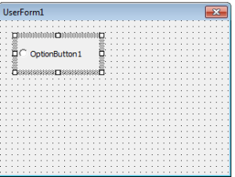
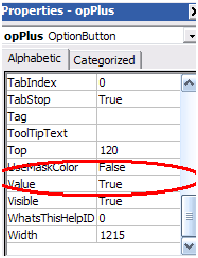
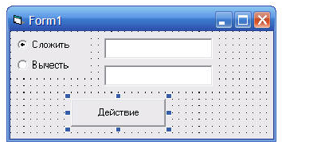
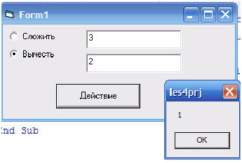
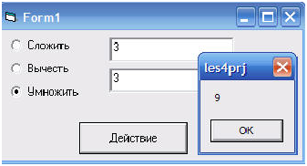

Элемент управления OptionButton
Переключатель OptionButton подобен флажку CheckBox, так как он тоже позволяет отображать и выбирать значение типа True/False или да/нет. Обычно переключатель имеет вид маленького кружка, внутри которого отображается (если переключатель выбран) или не отображается (если переключатель не выбран) черная точка. Щелкая на переключателе, пользователь выбирает его или отменяет его выбор. Отличие переключателя OptionButton от флажка CheckBox состоит в том, что из группы может быть выбран только один переключатель (тогда как флажков, принадлежащих одной группе, допускается выбрать сразу несколько).
рис . 1.1 Элемент управления OptionButton на панели ToolBox

рис. 2.2 Элемент управления OptionButton на форме

рис. 2.3 Пример элемента управления OptionButton на форме
Чтобы создать группу переключателей, поместите их на элементе управления Frame. Обратите внимание, что вначале необходимо добавить в окно формы панель Frame, а затем разместить на ней переключатели OptionButton. Чтобы сделать переключатель частью группы, его сразу же следует поместить на панель Frame. Таким образом перетащить уже созданный переключатель из окна формы на панель вы не сможете.
Еще один способ создания группы переключателей состоит в использовании свойства GroupName. Все элементы управления OptionButton, свойство GroupName которых имеет одинаковое значение, считаются частью одной группы. Выбор одного такого переключателя исключает возможность выбора других, даже если они не расположены на одной панели.
Присвоение свойству Value переключателя значения True сопровождается автоматическим присвоением значения False этому же свойству других переключателей, относящихся к данной группе. Чтобы определить, какой переключатель группы был выбран, программа должна просмотреть все элементы OptionButton и найти тот из них, свойству Value которого присвоено значение True.
Напишем небольшой тестовый пример. Для начала кинем на форму два компонента OptionButton, один из них назовем opPlus, другой opMinus. И дадим имена: “Сложение” и “Вычитание” соответственно. У объекта opPlus установим в true свойство value*:

Теперь добавим два текстовых поля (TextBox), с именами txNumber1 и txNumber2, текст у них очистим. Еще нам понадобиться кнопочка (CommandButton). Назовем ее cmDo и назначим заголовок “Действие”. Вот что должно в итоге получиться*:

Теперь напишем для кнопочки обработчик нажатия:
Private Sub cmDo_Click()
If opPlus.Value = True Then
MsgBox (Val(txNumber1.Text) + Val(txNumber2.Text))
End If
If opMinus.Value = True Then
MsgBox (Val(txNumber1.Text) – Val(txNumber2.Text))
End If
End Sub
Данная программа у нас проверяет, какой вариант выбран, сложение или вычитание и делает с числом соответствующее действие. Главной особенностью кнопки OptionButton в том, что невозможно выбрать сразу две кнопочки. Запустите программу и убедитесь в этом сами:

Добавим еще и умножение. Для этого кинем на форму еще один OptionButton с именем opMult и заголовком “Умножить”. Добавим несколько строчек в нашу программу:
Private Sub cmDo_Click()
If opPlus.Value = True Then
MsgBox (Val(txNumber1.Text) + Val(txNumber2.Text))
End If
If opMinus.Value = True Then
MsgBox (Val(txNumber1.Text) – Val(txNumber2.Text))
End If
If opMult.Value = True Then
MsgBox (Val(txNumber1.Text) * Val(txNumber2.Text))
End If
End Sub
Запустим программу и убедимся, что она работает правильно:
